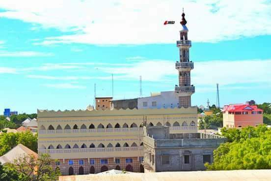

Dabakaayo madow
Dabakaayo madow, is a beautiful and peaceful place located in Banadir. It is known for its easy transportation and basic live facilities like mosques,hospital, schools, universities and large markets.
The people here are warm, friendly, and deeply connected to their traditions. We celebrate many cultural islamic events, and one of my favorite islamic events is juma days and Eid festivals, which brings everyone together.
Nature lovers would love my village for its plants and Nature, since i was here for about couple years, i can say this village is the best village in banadir region, and it is the center of the town where i can go easy to the university, educational places in the town and the markets.
Al-Noor Mosque is one of the biggest mosque in the village, which can hold masive number of prayers daily, it is about three flours.

Al-Noor Mosque